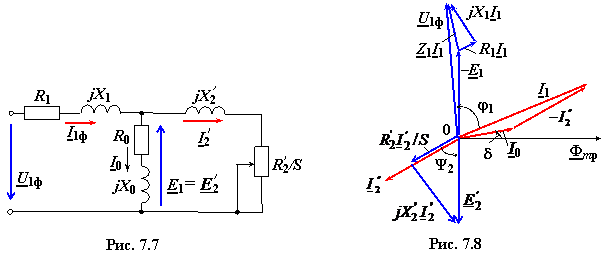

В уравнения (7.5), ..., (7.7) входят
величины ЭДС, напряжений, токов, полных сопротивлений в комплексной форме.
Используя схему замещения фазы АД (рис. 7.7) и приведённые уравнения, строят векторную
диаграмму (рис. 7.8), которая позволяет наглядно увидеть соотношения и
углы сдвига фаз между электрическими величинами. Суммируя напряжения на
индуктивном сопротивлении Х1 и на активном R1 обмотки статора с ЭДС -Е1, получают вектор фазного напряжения
U1ф.
|  |
Угол сдвига фаз φ1 < π/2, так как двигатель потребляет активную и реактивную мощности со стороны статора. Через вал ротора двигатель отдаёт полезную механическую мощность нагрузке.